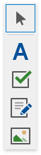
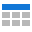
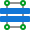
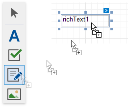

Control Toolbox
The Control Toolbox lists all available controls and allows you to add them to your report.

Available Controls
The available report controls can be divided into the following categories:
General Content
The following controls are most commonly used to display data in a report.
|  | |||||||
|---|---|---|---|---|---|---|---|
| Bar Code | Check Box | Gauge | Label | Character Comb | Picture Box | Rich Text | Table |
Extended Data
The following controls are connected to data individually, without accessing a report's data source.
| Chart | Pivot Grid | Sparkline |
Report Layout
The following controls allow you to draw shapes in a report and customize the report layout.
|  |  |
 |
||||
|---|---|---|---|---|---|---|
| Cross-Band Line | Cross-Band Box | Line | Page Break | Panel | Shape | Subreport |
Document Statistics
The dynamic content of the following controls is not obtained from a data source.
| Page Info | Table of Contents |
Add a Control to a Report
To add a control from the Toolbox, do one of the following.
Double-click an item in the Toolbox for the appropriate control, which will be created at the Detail band's top left corner.
Drag and drop an item from the Toolbox onto the required location within a report.

- Select an item in the Toolbox, and then click the required location within a report.
Select an item in the Toolbox, and then indicate the bounding rectangle by holding the left mouse button.

Select the  Pointer item when you need to perform selection, re-positioning or resizing operations. It is automatically selected after you drop a control onto a report.
Pointer item when you need to perform selection, re-positioning or resizing operations. It is automatically selected after you drop a control onto a report.